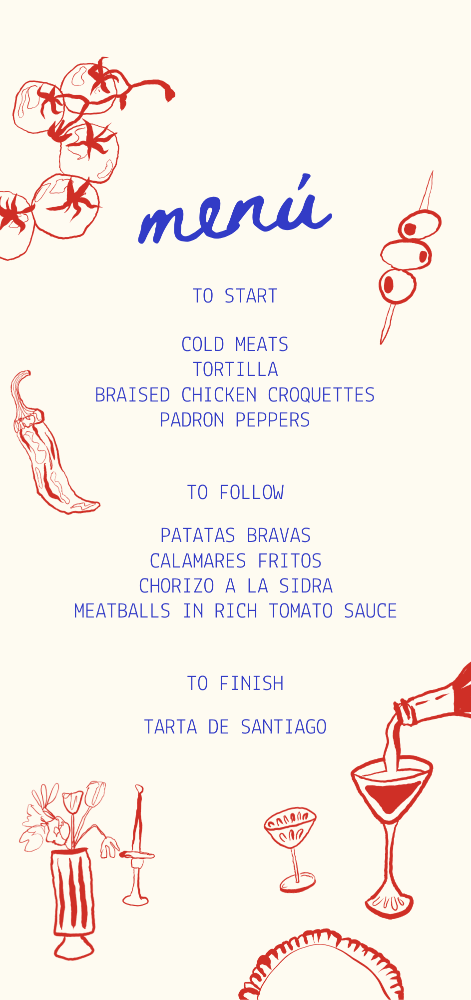
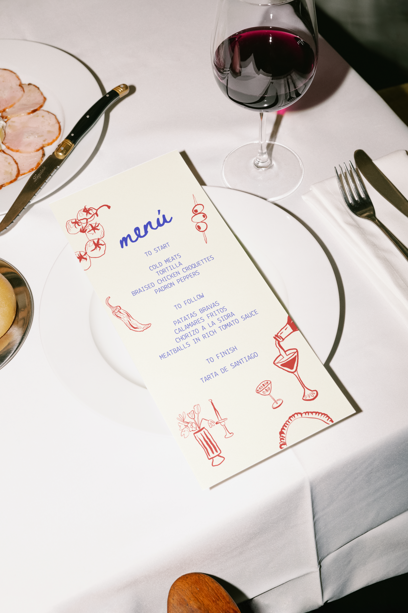

MaeMüllen · Design System v0.1
MaeMüllen · Design System v0.1

The real logo files, supplied by Laura & Poppy. Sampling them confirms the palette exactly — cream #fffaed, red #a23b3b, pink #e19494.

The Bendito menu is portfolio work. Its print red #cf291f and blue #313bc6 are that project's palette and must not leak into the MaeMüllen system — but the illustration style is Poppy's, and it is the reference for the hand-drawn elements called for on the About page.


All five brand values were sampled from the deck's swatches and match the stated hex exactly.
WCAG 2.1 · normal text needs 4.5:1 · large text (≥24px, or ≥18.7px bold) needs 3:1. These ratios are calculated in the browser from the hex values above.
| Sample | Foreground | Background | Ratio | Verdict |
|---|
Display is the logotype face — switch it in the bar above. Body is Inter, standing in for the deck's Helvetica World (a paid Monotype licence, impractical as a webfont).
The deck's signature treatment (p7). Uppercase, justified, max 44 characters per line. Never more than four lines, and at most one per page — it loses its force otherwise.
A lifestyle-led creative studio building brands people want to follow. Social-first campaigns. Scroll-stopping content.
4px base scale. Nothing off-scale — if a value is missing, extend the scale rather than improvising.
| Container | Width | Use |
|---|---|---|
| --container-narrow | 45rem / 720px | Prose, forms, case-study body |
| --container-default | 75rem / 1200px | Most sections |
| --container-wide | 90rem / 1440px | Collage, portfolio grids |
| full bleed | 100vw | Hero, entry, portfolio stage |
Three tiers. Every state is shown pinned below — hover and focus are also live, so you can tab through them.
Sizes
Primary — solid
Secondary — outline
Tertiary — bracket (signature)
Hover it: the brackets slide outwards 4px. They are pseudo-elements, so screen readers never announce them.
The deck shows two input styles. The underline treatment wins — the boxed variant's red labels would collide with red CTAs. Fields below are real; tab through them.
Both header directions from the deck. Decided in Round 4 — shown here so the choice is visible early.
A · Centred bar (Nude Social reference)
B · Left wordmark + services marquee (Imi reference)
The marquee pauses on hover and on focus-within — the focus half is what makes it keyboard-usable. The duplicated track is aria-hidden so screen readers hear the list once. It stops entirely under reduced motion.
Durations and easings as tokens. Every animation has a reduced-motion path — turn on "Reduce motion" in your OS and reload to verify.
| fast | 160ms |
| base | 260ms |
| slow | 420ms |
| deliberate | 720ms |
| cinematic | 1200ms |
Placeholders are deliberately loud so nothing ships by accident. Real photography replaces these as it arrives.